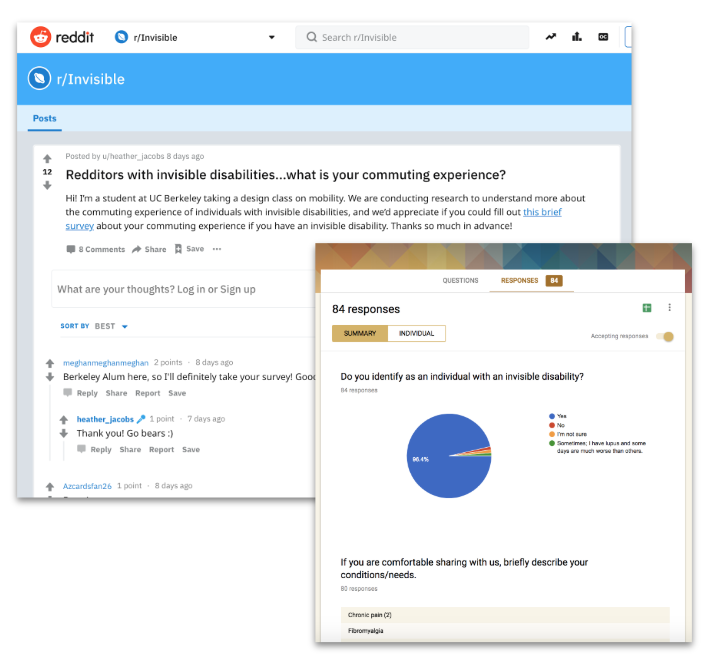
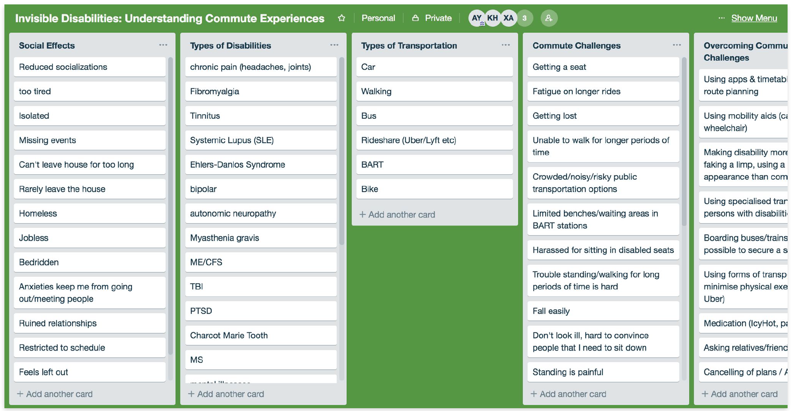
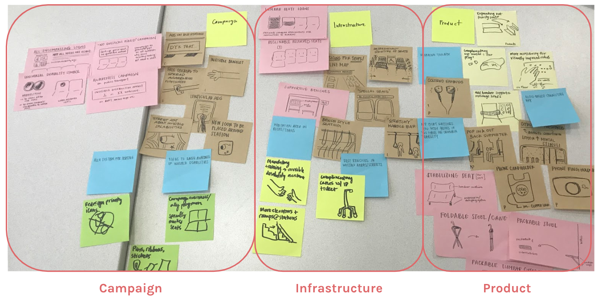
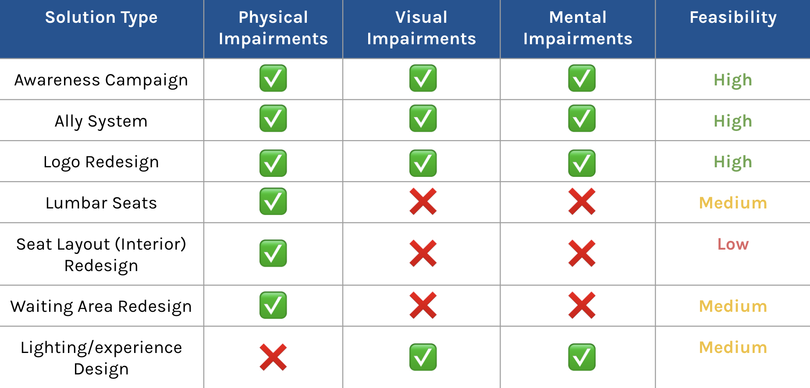
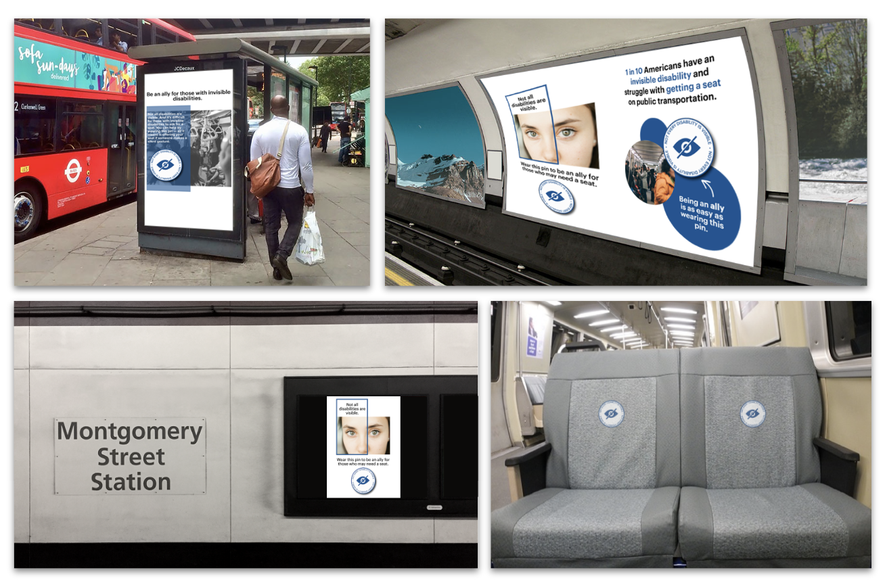

Context
During my Fall 2018 semester at UC Berkeley, I worked with Alyssa Yang, Kathleen Hsu, and Jasmine Tran on a project under the Jacobs School of Design Innovation. A joint effort between Jacobs School and Ford Motors, the project started with the prompt: How might we reimagine mobility?
As a team, we brainstormed on some common or possible pain points that commuters in the Bay Area often faced with. We were especially interested in how marginalised groups relied on a transportation system that might not quite cater to their needs. In particular, we discovered that there was a dearth of accessibility solutions for individuals with invisible disabilities - i.e., disabilities that are not immediately apparent, yet significantly impair normal activities of daily living.
User Research
After consolidating our research goals and objectives, we used several channels to connect with individuals with invisible disabilities. A preliminary survey was done to understand the various types of invisible disabilities, as well as their needs and experiences when commuting on public transport.
In addition to the survey, we conducted follow-up user interviews with interested individuals to gain deeper insights into the life and commuting experience with invisible disabilities. These interviews allowed us to connect more organically with the very individuals our project was aiming to help, and fuelled us with a deeper sense of purpose.
To supplement our findings, we also conducted secondary research on the types of disabilities and the way they impair everyday function.
Insight Synthesis
After conducting our research, we came together as a team to organise our findings. We used a shared Trello board for affinity mapping and spreadsheets to chart out relevant statistics.
Our key findings were:
- There are >50 unique forms of invisible disabilities, none of which were depicted in traditional priority seating or accessibility signages.
- Individuals' main concern was the lack of awareness of such conditions, leading to frequent misunderstandings when they need to use priority seating or accessibility infrastructure.
- Due to the difficulty in commuting with an invisible disability, many had affected social lives and livelihoods. In extreme cases, this has led to joblessness, homelessness and mental conditions.
Brainstorming Solutions
With these research takeaways in mind, we held a team brainstorming session on possible solutions to address the key issues. We ideated for different types of impairments and sorted our solution ideas into three main categories: campaign, infrastructure, and product.
Campaign solutions contained trends around marketing and public awareness in public transportation spaces. These ideas were based on the frustration people experienced about a lack of awareness on public transportation, especially for those with invisible disabilities.
Infrastructure solutions revolved around partnerships with public transit agencies, for bigger scale changes to policies or the physical aspects of transportation (interior, seating or station design concepts).
Product solutions explored handheld ideas that could be distributed to commuters for personal use. These were based on specific requests from our survey that addressed physical and emotional comfort.
Solution Prioritisation
Feasibility was ranked on would have the greatest impact based on our key findings and what was most realistic considering the constraints of BART/AC Transit (public transit agencies in the Bay Area), large organisations where change is slow.
In the end, we decided to go with an awareness campaign featuring a logo design and promoting an ally system - combining the top 3 most feasible solutions from our ideation process.
The Final Campaign
After several rounds of concept iterations, we came up with a logo with the tagline "Not every disability is visible" - with an easily recognisable iconography and a circular shape that could be made into badges, stickers and buttons for use in public spaces and by individuals - both able-bodied allies and individuals with invisible disabilities.
Through an invisible disability campaign, we hope to create a new culture on public transit with an ally system promoting more understanding towards the needs of individuals with invisible disabilities.
